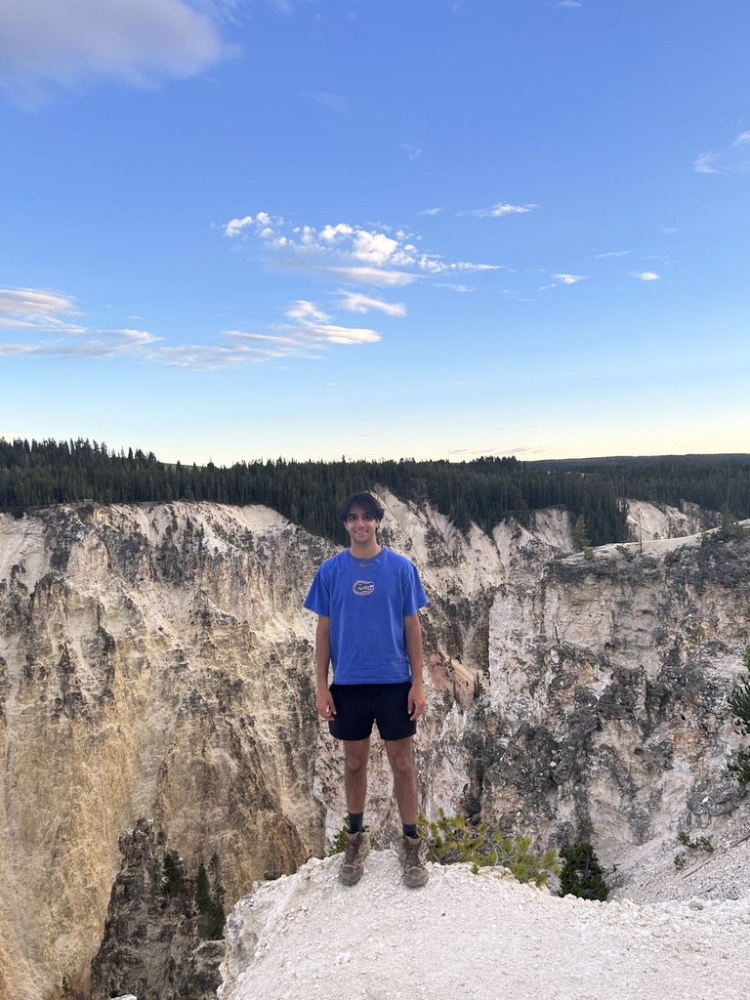

I've always been drawn to the question underneath the question. What started as a fascination with cells and genetics turned into a career chasing biological problems that are genuinely hard, the kind that sit at the edge of what we understand and require you to pick up new tools just to make progress.
I studied microbiology at UF, then did a master's in bioinformatics at Georgetown. Along the way I published research on C. elegans protein aggregation and its links to neurodegeneration, spent a summer at the NIH building signal processing pipelines for cardiovascular wearables, and developed machine learning models to analyze Arctic sea surface height data from satellite altimetry. Each project was a different domain, but the same underlying pull: find the pattern, understand the system, push toward something useful.
Right now I'm a Project Manager at Epic Systems in Madison, helping health systems implement cardiology software. It's sharpened how I think about complex systems and the humans who use them. But where I want to go is deeper into biotech, closer to the science, working on problems where biology and technology are still figuring out what's possible together.
Outside work I'm usually hiking, cooking something new, reading, or learning whatever technology has caught my attention that week. I also play tennis, and I tutor high school students, which has a way of keeping you honest about what you actually understand versus what you just think you do.